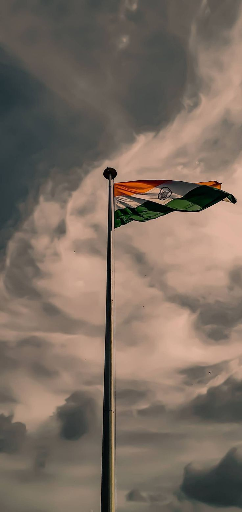

National Institute of Technology, Warangal, formerly known as Regional Engineering College, was established in 1959. Pandit Jawaharlal Nehru laid the foundation stone for this institute on October 10, 1959, the first in the chain of 31 NITs (formerly known as RECs) in the country.
The Institute is well known for its dedicated faculty, staff and the state-of-the art infrastructure conducive to a healthy academic environment.The Institute is constantly striving to achieve higher levels of technical excellence. Evolving a socially relevant and yet internationally acceptable curriculum, implementing innovative and effective teaching methodologies and focusing on the wholesome development of the students are our concerns. Thanks to UNESCO and UK assistance in the past, many developmental activities were undertaken. The World Bank Assistance under Technical Education Quality Improvement Programme (TEQIP) had been a timely help in the overall development of the Institute.
The Institute currently has thirteen academic departments and a few advanced research centres in various disciplines of engineering, pure sciences and management, with nearly 100 laboratories organized in a unique pattern of functioning, Central Library with state of the art facilities, Auditorium, Student Activity Centre, Mega Computer Centre (currently renamed as Centre for Digital Infrastructure and Services (CDIS)), Indoor Games Complex, big stadium, Seminar Halls with required infrastructure, Dispensary with state of art of facilities, etc. Faculty of repute, brilliant student
community, excellent technical and supporting staff and an effective administration have all contributed to the pre-eminent status of NIT Warangal. The Institute offers Ten undergraduate programmes (B.Tech.) in engineering, Twenty nine post graduate programmes (M.Tech., M.Sc., MCA and MBA) in engineering, sciences and management and research programmes in engineering, sciences, humanities, physical education and management. The institute is well-known for its Research and Development, Industrial consultancy, Continuing education and Training programmes for teachers and industrial personnel.
